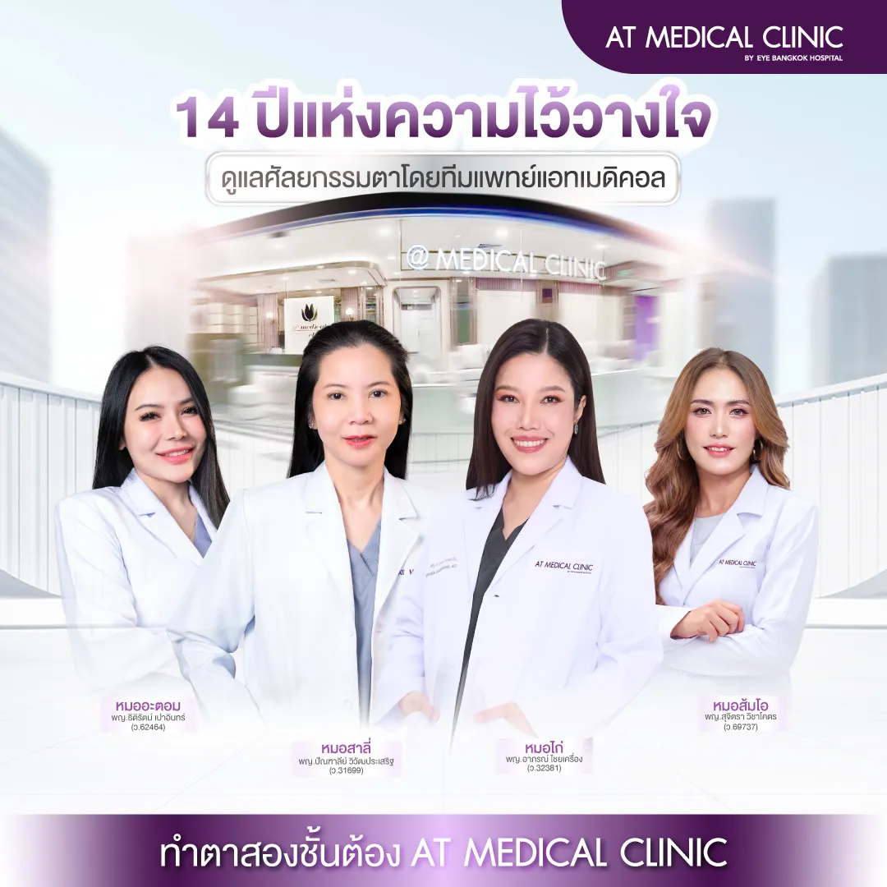
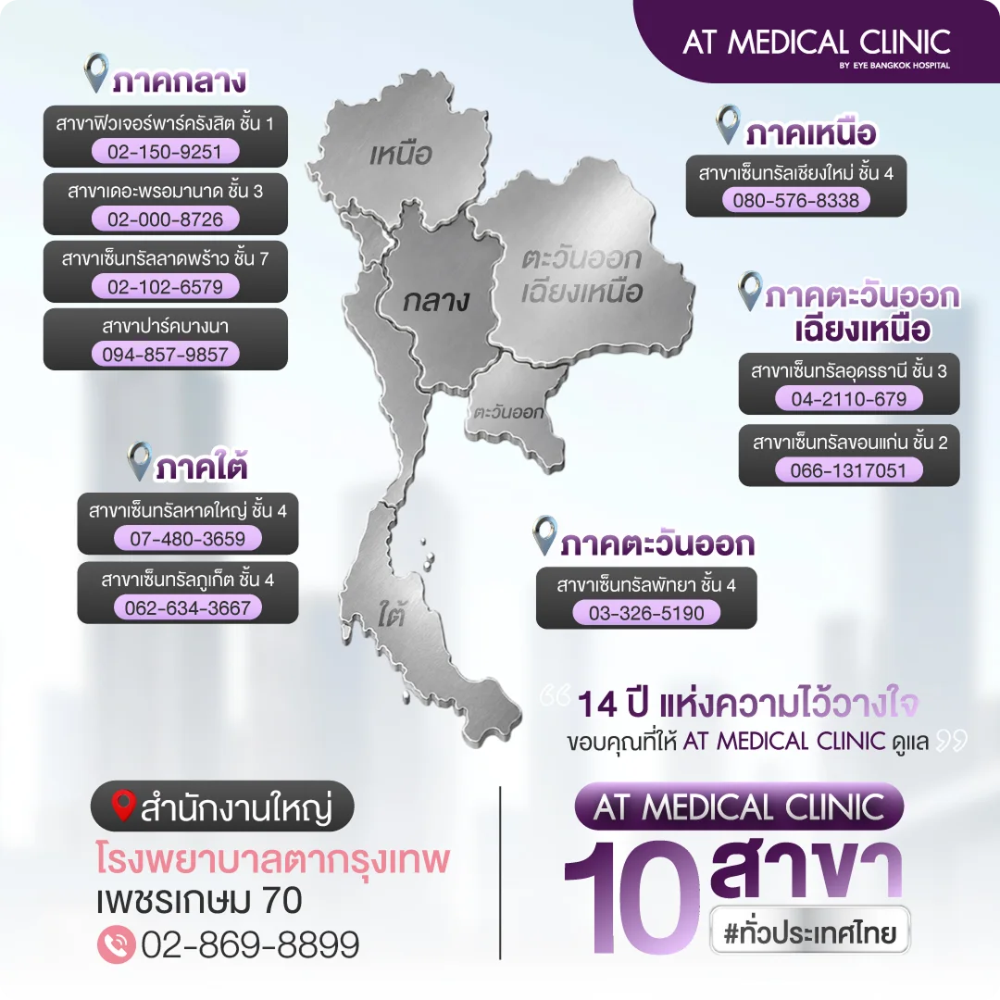

ยกกระชับลึกถึงชั้น SMAS ช่วยพยุงโครงสร้างใบหน้าในระดับลึก
ศัลยกรรมดึงหน้า (Facelift)
ยกกระชับถึงชั้น SMAS
ดูแลแก้มตก ร่องแก้ม และกรอบหน้า
ออกแบบตามโครงสร้างใบหน้า
แต่ละบุคคล
-
ยกกระชับลึกถึงชั้น SMAS ช่วยพยุงโครงสร้าง
ใบหน้าในระดับลึก -
ใช้เทคนิคยาชาเฉพาะที่ ไม่ต้องวางยาสลบ
ลดความกังวล - ประหยัดเวลาในการทำหัตถการและฟื้นตัวได้เร็วขึ้น
-
บวมช้ำน้อยลง ด้วยการวางแผนและดูแล
อย่างละเอียดโดยแพทย์
ดึงหน้าไม่ดมยา 59,000 บาท/ส่วน*
*ราคาสำหรับกรณีทำพร้อมกัน 3 ส่วน
" ดึงหน้ามา 3 ปี ผลลัพธ์ยังดูดี
สำหรับผมการดึงหน้า
ไม่ใช่การเปลี่ยนตัวเองแต่คือ
การคงความเป็นตัวเอง
ในเวอร์ชันที่ดูดี และมั่นใจขึ้น "
Real Case Story
โปรแกรมใหม่ล่าสุด BABY FACE LIFT
Real Case Story
ยกกระชับใบหน้า คืนกรอบหน้าที่ดูอ่อนเยาว์ ด้วยการวางแผนเฉพาะบุคคล
"ดูแลปัญหาความหย่อนคล้อย แก้มตก ร่องแก้ม และกรอบหน้า
ด้วยเทคนิคศัลยกรรมดึงหน้าที่ออกแบบตามโครงสร้างของแต่ละคน"
เหตุผลที่ผู้เข้ารับบริการเลือกทำ Facelift ที่ AT Medical Clinic
วางแผนโดยแพทย์เป็นรายบุคคล มีเคสจริงให้ศึกษา มีทีมดูแลก่อนและหลัง และมีสาขาสำหรับติดตามผล

ผลลัพธ์และความเหมาะสมขึ้นอยู่กับการประเมินของแพทย์และสภาพของแต่ละบุคคล

คำถามที่ผู้สนใจถามมากที่สุดก่อนตัดสินใจทำ Facelift ดึงหน้า
ความเจ็บ แนวแผล ระยะเวลาของผลลัพธ์ และรายละเอียดค่าบริการ